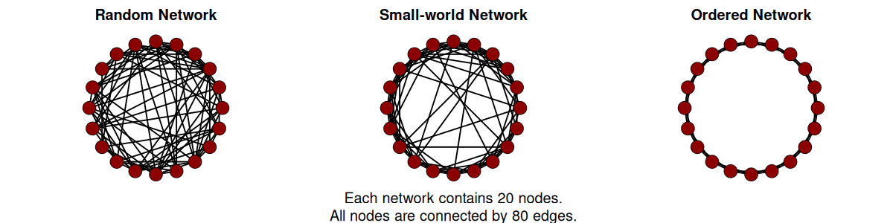
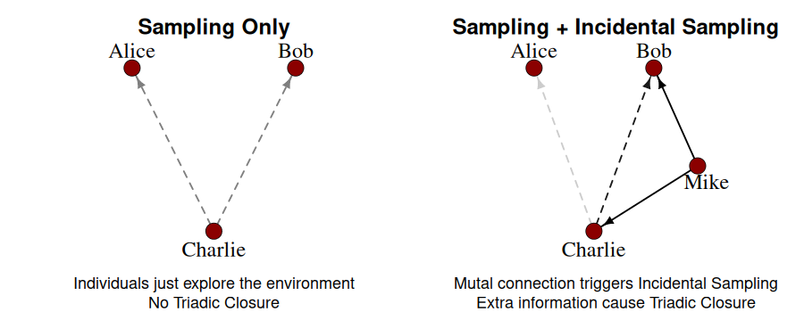

Social Networks
What's the Plan?
My goal is to merge the individual level of human cognition (e.g., impression we have of each other) with the sociological level of human society (e.g., the social network structure). Let me tell you how.
Small World Network and Human Society
Human society can be represented as a network. Each person is a single node and each relationship is a link connecting two nodes. If two people know each other, they are connected. Froming new relationships is called tie formation. The ways in which people form new relationships are well described in both sociology and social psychology. They are based on various forms of socialization and on the construct governing the tie formation process which is the impression each member of the dyad has of the other.

Society is arranged in a densely interconnected network with a peculiar small-world structure. This stucture is the results of people actively navigate the social environment with specific search information patterns guided by different motives.
The sampling approach allows us to understand how people collect social information throught which they construe their social environment.
The sampling approach tells us how people collect information which is the sole basis people can use to build their (trustworthines) impressions. Once an impression is formed, it is the sole determinant of the social tie formation process which is ultimately responsible for the structure of the network itself. Such network determines the social interaction pattern and information diffusion routes. Diffusion routes are the highway via which persuasion happens, misinformation spreads, and attitudes are negotiated among peers.
Triadic Closure
The sampling approach is such a powerful framework that it can parsimoniously explanin how individuals interact with each others forming the social network structure we observe. For example, a key sociological process responsible for the generation of small world networks is the so called triadic closure. If this process is repeated often enough, a random network (the most liking structure created by chance alone) slowly turns into a small world network.

Triadic closure suggests that if two nodes (e.g., two strangers) in the network are connected via a mutual connection (e.g., a common friend), they are more likely to form a new social tie connecting them.
In the left side of the picture, Charlie, our focal agent, deosn't know Alice or Bob. If Charlie has to explore the explore the social environment by sampling alone, he is equally likely to become friend with Alice or Bob.
Charlie will interact with both to get to know them better and he will immediatedly stop interacting with one of them as soon as a negative interaction arises.
This is commonly referred to negativity-induced early sampling truncation. A premature negative impression of one of the two, Alice or Bob, will push Charlie to never interact with this person and therefore, he will never correct his impression.
The final experience sample will be negatively biased and unreliable, as it is very small. This bias is referred to as small sample bias and it can be overturned only by collecting additional samples. Such samples will never occur if Charlie never interact with the person again, but they can occur via an indirect connection, Mike.
This means that Mike can only increase Charlie's small biased sample of interactions with Bob but not with Alice. This means that Alice is unprotected from small sample bias while Bob is! Therefore, there is a greater chance that Charlie will develop a positive impression of Bob, become his friend, and close the triad.
This explanation of triadic closure based on the sampling approach does not require Mike to actively introduce Bob, or Charlie to perceive Bob as more similar (homophilie), or any other additional assumption.
The Sampling Approach
The sampling approach parsimoniously connect an individual cognitive construct, such as the impression, with a sociological feature of human society, such as the small world network structure, by explaining the triadic closure process.
Related Publications
Biella, M., & Hütter, M. (2026). Navigating the Social Environment: A Sampling Approach to Trustworthiness. Personality and Social Psychology Bulletin.
Biella, M., & Batzdorfer, V. (2026). Editorial: The phenomenon of misinformation in different domains and by various disciplines. Frontiers in Psychology.
Biella, M., Gemignani, A., Conversano, C., Miniati, M., & Orrù, G. (2025). Psychometric Assessment of the Italian Version of the Vaccination Attitudes Examination (VAX) Scale and Exploration of its Link with Policy Endorsement. Collabra: Psychology.
Biella, M., Orrù, G., Ciacchini, R., Conversano, C., Marazziti, D., & Gemignani A. (2023). Anti-vaccination attitude and vaccination intentions against COVID-19: a retrospective cross-sectional study investigating the role of media consumption. Clinical Neuropsychiatry.
Batzdorfer, V., Steinmetz, H., Biella, M., & Alizadeh, M. (2021). Conspiracy theories on Twitter: emerging motifs and temporal dynamics during the COVID-19 pandemic. International Journal of Data Science and Analytics.